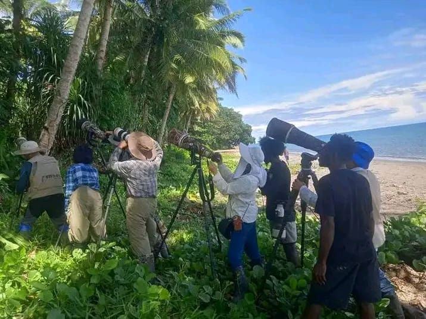

üê¢
Travel Potential

Di pantai ini, pengunjung disuguhkan pemandangan pepohonan yang rimbun dan udara yang segar — kombinasi yang membuat suasana tenang dan menenangkan.

Penyu belimbing, salah satu spesies langka, menjadikan Pantai Della sebagai lokasi penting untuk bertelur. Di pantai yang tenang ini, mereka melanjutkan siklus kehidupannya sekaligus menambah daya tarik ekowisata dan pentingnya pelestarian alam.

Spot surfing unggulan dengan ombak yang konsisten dan menantang, menjadikannya destinasi favorit peselancar dari berbagai negara.